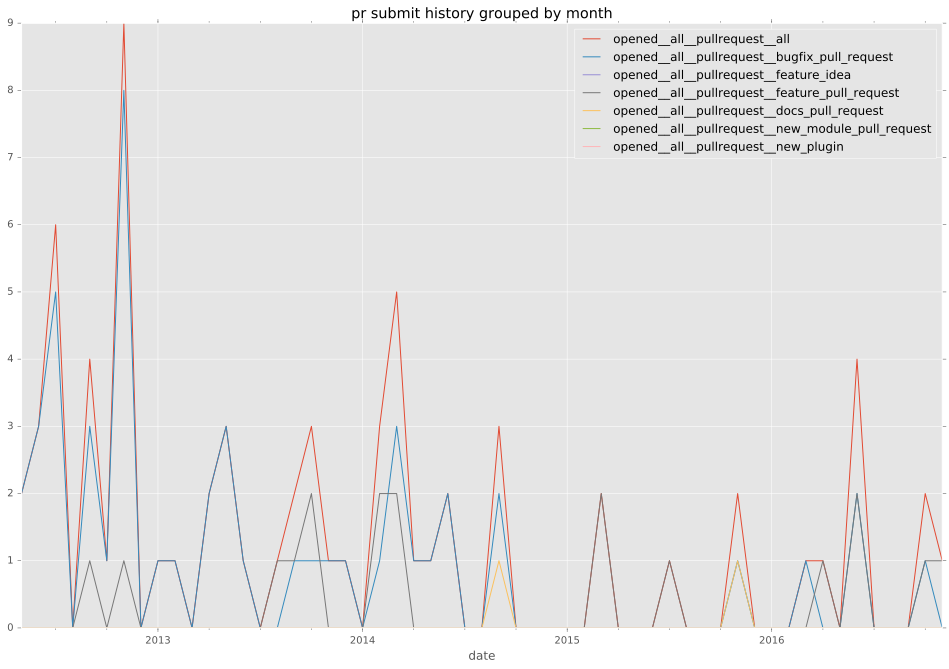
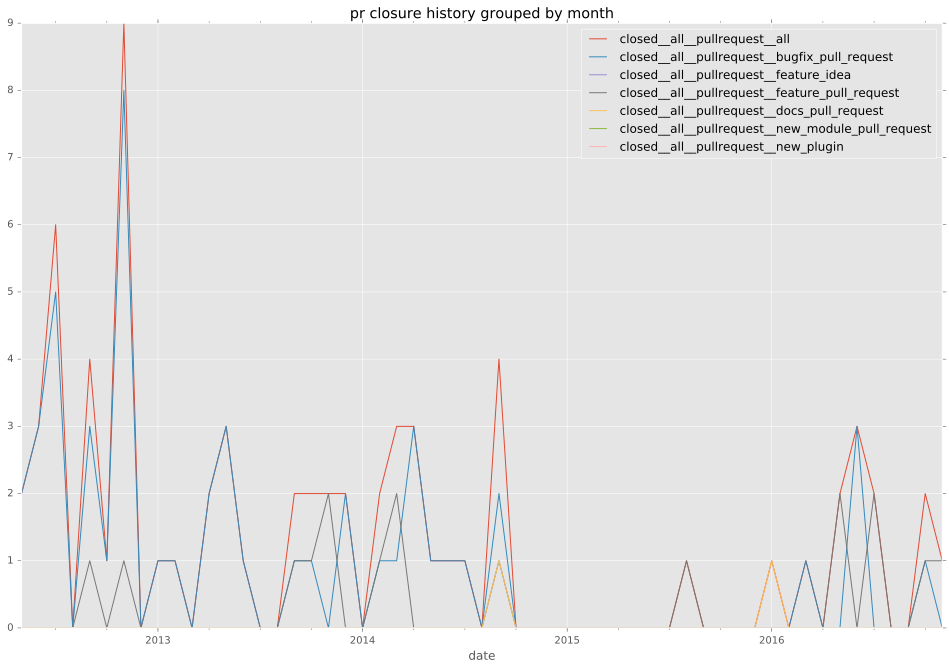

authors
- sfromm
maintainers
- ansible
contributors
- bcoca : 27 commits
- jpmens : 18 commits
- abadger : 16 commits
- mpdehaan : 11 commits
- sfromm : 9 commits
- jctanner : 8 commits
- freym : 8 commits
- risaacson : 6 commits
- tima : 4 commits
- jimi-c : 4 commits
- mscherer : 2 commits
- dhozac : 2 commits
- akerl : 2 commits
- dolph : 1 commits
- dmkoch : 1 commits
- Xerkus : 1 commits
total issue counts
unknown: 2
bugfix pull request: 56
pullrequest: 76
docs pull request: 2
feature pull request: 15
feature idea: 5
issue: 26
bug report: 22
issue history
pullrequest history


days open by issue type
feature pull request
count: 21
std: 176.550370527
min: 0
max: 452
median: 29.0
mean: 109.333333333
all
count: 138
std: 83.0918162075
min: 0
max: 452
median: 0.0
mean: 26.5434782609
pullrequest
count: 0
std: nan
min: nan
max: nan
median: nan
mean: nan
docs pull request
count: 2
std: 33.941125497
min: 8
max: 56
median: 32.0
mean: 32.0
bugfix pull request
count: 85
std: 6.88578286052
min: 0
max: 33
median: 0.0
mean: 2.72941176471
feature idea
count: 5
std: 97.4027720345
min: 0
max: 234
median: 19.0
mean: 63.4
issue
count: 0
std: nan
min: nan
max: nan
median: nan
mean: nan
bug report
count: 22
std: 60.6680878479
min: 0
max: 202
median: 3.5
mean: 34.0454545455
closures grouped by total days open